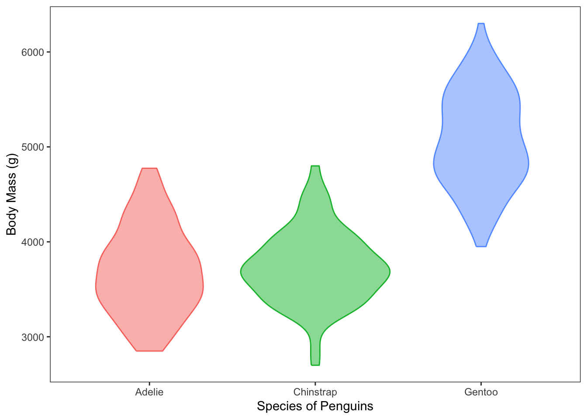
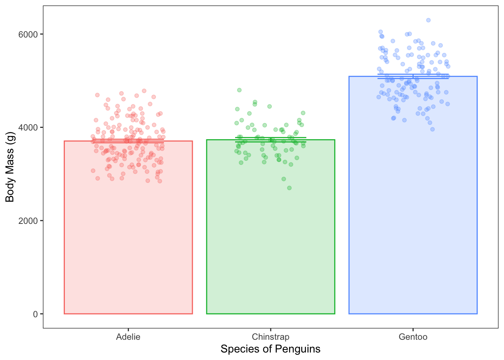
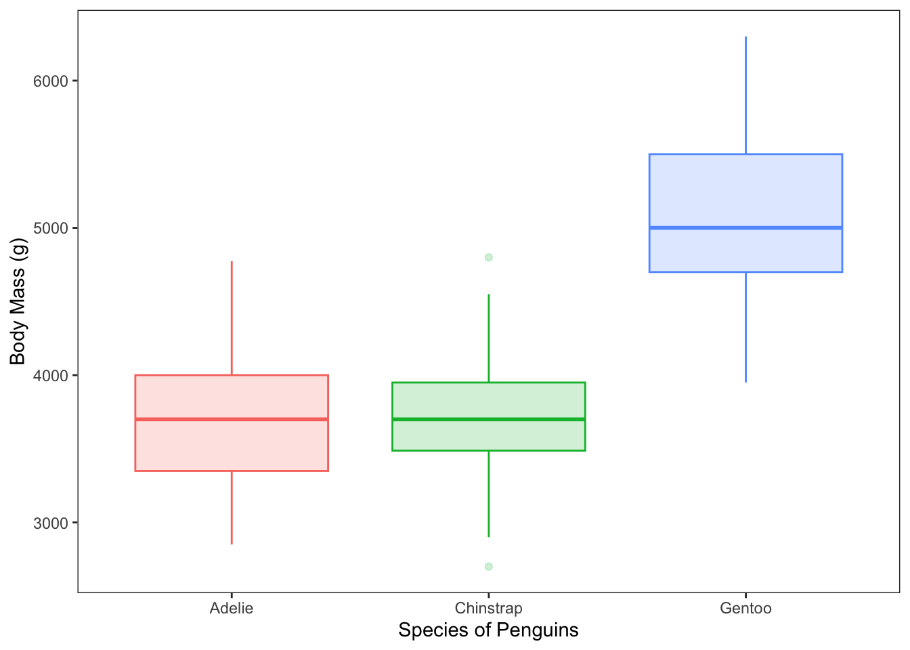

The purpose of this demonstration is to show some of my favorite dplyr / tidyverse functions. I have chosen some of the functions that I use regularly during data preparation in my own work.
Load Data
I’ll demonstrate the functions using the palmerpenguins dataset. The penguins dataset is good to practice data wrangling because it contains some NA values.
library(palmerpenguins)library(tidyverse)
── Attaching core tidyverse packages ──────────────────────── tidyverse 2.0.0 ──
✔ dplyr 1.1.4 ✔ readr 2.1.5
✔ forcats 1.0.0 ✔ stringr 1.5.1
✔ ggplot2 4.0.0 ✔ tibble 3.2.1
✔ lubridate 1.9.3 ✔ tidyr 1.3.1
✔ purrr 1.0.2
── Conflicts ────────────────────────────────────────── tidyverse_conflicts() ──
✖ dplyr::filter() masks stats::filter()
✖ dplyr::lag() masks stats::lag()
ℹ Use the conflicted package (<http://conflicted.r-lib.org/>) to force all conflicts to become errors
data <- penguins
Base R vs. Tidyverse
In tidyverse syntax, multiple commands are strung together using “pipes”: %>%. The pipe takes the result of what was generated before it, and passes that the the next function. Most things that I am showing you using tidyverse syntax could also be accomplished through base R, but that approach would involve assigning off intermediary objects. tidyverse is elegant in the way that it allows us to compute complex multi-step computational processes in a single step.
Favorite Tidyverse Functions
Select Some Rows
You may want to choose only some rows of a given dataset to work with.
Select rows that are Gentoo penguins who have a bill length over 40mm:
data %>%filter(species =="Gentoo", bill_length_mm >40)
We see a preview of the first few rows of the data
There are 113 additional rows and 2 additional columns that are not shown.
Group the Data
Count the number of penguins from each species:
data %>%group_by(species) %>%summarise(n =n() )
# A tibble: 3 × 2
species n
<fct> <int>
1 Adelie 152
2 Chinstrap 68
3 Gentoo 124
There are 152 Adelie penguins, 68 Chinstrap penguins and 124 Gentoo penguins in the dataset.
Choose Rows Based on a Factor
Select the Gentoo and Chinstrap penguins, group the data by species, and count the number of penguins from each species:
data %>%filter(species %in%c("Gentoo","Chinstrap")) %>%group_by(species) %>%summarise(n =n() )
# A tibble: 2 × 2
species n
<fct> <int>
1 Chinstrap 68
2 Gentoo 124
Now we only see two rows, which correspond to the two penguin species that we asked for.
Can be useful if you have many levels of a variable, and you are interested in seeing some specific categories.
Choose the rows that do not have “Adelie” in the species column, then group the data by species, then summarise the number of penguins from each species:
data %>%filter(species !="Adelie") %>%group_by(species) %>%summarise(n =n() )
# A tibble: 2 × 2
species n
<fct> <int>
1 Chinstrap 68
2 Gentoo 124
Same values as the ouptut above
Selecting all the Gentoo and Chinstrap rows is the same as selecting all the rows that are not Adelie penguins!
Heaviest penguin is first down to the lightest penguin.
Selecting Some Columns
Sometimes datasets have many columns that are irrelevant to a given analysis. Sometimes it works best to select the columns that will be involved in making each analysis or chart to ensure that extraneous problems don’t create issues.
data %>%select(c("body_mass_g", "species", "sex"))
# A tibble: 344 × 3
body_mass_g species sex
<int> <fct> <fct>
1 3750 Adelie male
2 3800 Adelie female
3 3250 Adelie female
4 NA Adelie <NA>
5 3450 Adelie female
6 3650 Adelie male
7 3625 Adelie female
8 4675 Adelie male
9 3475 Adelie <NA>
10 4250 Adelie <NA>
# ℹ 334 more rows
Only the columns that we asked for are the in the preview
Generating New columns
The block of code below performs the following functions:
Calculate a new column called body_mass_kg that is the value in the body_mass_g column * 1000.
Select the columns species and body_mass_kg
Group the Data by the species column
Remove rows that contain an NA value
Calculate the number of penguins of each species and the mean and standard deviation of the body_mass_kg column for each penguin species
Print the results out in a professional looking table
The mean body mass for Gentoo penguins is higher than the mean body weights for the other two species.
Select Distinct instances
Selecting distinct instances is useful when exploring a dataset to get familiar with the levels of the variables (i.e., the names of the categories).
data %>%distinct(island)
# A tibble: 3 × 1
island
<fct>
1 Torgersen
2 Biscoe
3 Dream
There are three islands in the dataset: Torgersen, Biscoe, and Dream.
Count the number of pengins from each species measured on each island:
data %>%group_by(island, species) %>%summarise(n =n() ) %>% knitr::kable()
`summarise()` has grouped output by 'island'. You can override using the
`.groups` argument.
island
species
n
Biscoe
Adelie
44
Biscoe
Gentoo
124
Dream
Adelie
56
Dream
Chinstrap
68
Torgersen
Adelie
52
Adelie penguins were measured on all three islands
Gentoo penguins were only measured on Biscoe island
Chinstrap penguins were only measured on Dream island
Rename Columns
Sometimes datasets come with long, similar, or otherwise annoying column headers. It is a good idea for the column names to be systematic, distinct, and as short as possible.
data <- data %>%rename(b_length = bill_length_mm,b_depth = bill_depth_mm,flip_length = flipper_length_mm,body_mass = body_mass_g )
In this case we are overwriting the data object data.
We are overwriting data because we would want to save the shortened column header names for subsequent analyses.
Rearranging columns
It is my preference to see identifying information first in a dataset followed by continuous measurements. The code below moves the two columns of identifying information that by default appear at the far right before the numeric variables.
data <- data %>%relocate(sex, year, .before = b_length)
Just like above, here, I am overwriting the data object so that my preferred organization is saved in the working environment.
Write Off a .csv File
Sometimes it is useful to save off a hard copy of a dataset or a summary that you’ve created in R. The cow below generates summary statistics split by all the demographic variabless, then saves off a .csv file.
data %>%group_by(year, island, species, sex) %>%summarise(n =n() ) %>%write_csv("summary.csv")
`summarise()` has grouped output by 'year', 'island', 'species'. You can
override using the `.groups` argument.
See More of Less of the Data Preview
Much of the time that you work with tidyverse codeblocks, you may want to see more or less of the output in the data preview. The code below alters the length of the data preview.
# A tibble: 3 × 8
species island sex year b_length b_depth flip_length body_mass
<fct> <fct> <fct> <int> <dbl> <dbl> <int> <int>
1 Chinstrap Dream female 2009 50.2 18.7 198 3775
2 Adelie Dream male 2007 37.2 18.1 178 3900
3 Gentoo Biscoe male 2008 46.4 15.6 221 5000
There are 3 rows of data in the preview because 1% of 334 is ~3.
Compute Quick Descriptive Stats
If there are NA values in quantitative columns that you want to summarize, you must first remove he NA values.
data %>%na.omit() %>%summarise(median =median(body_mass))
# A tibble: 1 × 1
median
<int>
1 4050
The median body mass in the whole dataset is 4050g.
Generate New Categorical Columns
It is sometimes useful to calculate new variables that combine multiple levels from another variable. The code below makes a new column named “heavy”. Penguins that are under 4050g will be assigned the label “light” and penguins that are over the median weight of 4050g will be labeled as “heavy”. Any rows that have missing data in the body_mass column will be labeled as “unknown”.
`summarise()` has grouped output by 'species'. You can override using the
`.groups` argument.
species
heavy_3
count
Adelie
hefty
7
Adelie
light
54
Adelie
medium
89
Chinstrap
hefty
2
Chinstrap
light
17
Chinstrap
medium
48
Gentoo
hefty
106
Gentoo
medium
16
Data viz
In this course, we’ve made lots of scatterplots and assessed lines of best fit that capture variance in continuous relationships. There is also value in grouping the data and looking at descriptive statistics (e.g., Range, mean, spread of the scores) within each group. Below I will show three diverent versions of presenting group-based descriptive information using charts.
Violin Plot
The code below generates a violin plot showing the distributions of body mass for each species of penguin.
data %>%group_by(species) %>%ggplot(aes(x = species, y = body_mass, colour = species, fill = species)) +geom_violin(alpha =0.5) +theme_bw() +theme(panel.grid =element_blank()) +theme(legend.position ="none") +labs(x ="Species of Penguins",y ="Body Mass (g)" )
Warning: Removed 2 rows containing non-finite outside the scale range
(`stat_ydensity()`).

The violin plot provides qualitative information about the spread of scores in each group, which is communicated by the shape of the “violins”.
Each violin is the distribution of scores plotted vertically and mirrored.
Bar Chart
Some people are partial to seeing a bar chart depicting mean values plus or minus an index of spread of the scores. The computation that is used as the error bars is field-specfic: Some fields us standard deviation, others use standard error of the mean, and there are some that use the 95% confidence interval. Since the error bars do not always represent the same thing, it is useful to provide information about what the error bars represent in the figure caption. Using the standard error of the mean is the norm in my field, so I will show it below.
Rstudio does not have a built in formula to compute SEM, so I will compute it myself by entering the formula
\[se = \dfrac{sd}{\sqrt{n}}\]
The standard error is equal to the standard deviation within a group divided by the square root of the number of scores in that group.
data %>%group_by(species) %>%na.omit() %>%summarise(n =n(),mean =mean(body_mass),sd =sd(body_mass),se = sd /sqrt(n) ) %>%ggplot(aes(x = species, y = mean, colour = species, fill = species)) +geom_bar(stat ="identity", alpha =0.2) +geom_errorbar(aes(x = species, ymin = mean - se, ymax = mean + se), width =0.5) +geom_jitter(data = data, aes(x = species, y = body_mass), width =0.25, alpha =0.3) +theme_bw() +theme(panel.grid =element_blank()) +theme(legend.position ="none") +labs(x ="Species of Penguins",y ="Body Mass (g)" )
Warning: Removed 2 rows containing missing values or values outside the scale range
(`geom_point()`).

Figure caption: Average body weights for each penguin species. Data plotted as mean value +/- SEM.
In the code above, I first computed the mean and se for each group, then piped that information directly to ggplot
I also added geom_jitter() which shows the individual datapoints overlain on top of the bars.
Boxplot
Some people like to use boxplots to showcase descriptive information about scores.
data %>%ggplot(aes(x = species, y = body_mass, colour = species, fill = species)) +geom_boxplot(alpha =0.2) +theme_bw() +theme(panel.grid =element_blank()) +theme(legend.position ="none") +labs(x ="Species of Penguins",y ="Body Mass (g)" )
Warning: Removed 2 rows containing non-finite outside the scale range
(`stat_boxplot()`).

The horizonal centeral line on each bar represents the group’s median score.
the box represents the inter-quartile range. 50% of each group’s scores fall in this range.